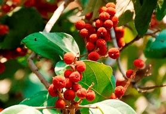

Latthe Education Society's Acharya Deshabhushan Ayurvedic Medical College And Hospital Bedkihal-Shamanewadi, 591214
Department of Dravyaguna Vigyana

Basonym of Drug
Kampillaka
Main Synonym
Raktanga
Rechana
Karkasha
Varnaka
Ranjanaka
Saurastrika
Regional Name
Gujarati: Kapilo
Hindi: Kabila
Kannada: Kunkundamar
Tamil: Kungumum
Telugu: Kunkum
English: Monkeyface Tree
Botanical Name
Mallotus philippensis
Family
Euphorbiaceae
External Morphology
8-10 meter high tree
Useful Parts
Flower
Fruit Hair
Important Phytoconstituent
Rottlerine
Isorottlerine
Aleurifolic Acid
Saponin
Mallotus A & B
Rasa Panchak
Rasa: Katu
Guna: Laghu, Tikshna, Ruksha
Virya: Ushna
Vipaka: Katu
Action
Vatakaphahara
Therapeutic Indication
Krimighna (Anti-helminthic)
Rechaka (Purgative)
Adhmanhara (Anti-flatulent)
Udardahara (Useful in urticaria)
Therapeutic Uses
Krimi:
Kampillaka seed hair powder with purana guda is beneficial in worm infestation.
Udarshoola:
Kampillaka powder with madhu and sharkara is useful in abdominal pain.
Vibandh:
Kampillaka powder with aargvadha fruit pulp is beneficial in chronic constipation.
Dose
0.5-1 gm
Formulations
Vidangadi Churna
Krumighatini Vati
Jivantyadi Yamak
Adverse Effect
Not Known
Remedial Measure
Not required